نوێژ(الصلاة)
١- نوێژ چییه؟
نوێژ: پهرستشێكه له چهند وته و كردهوهیهك پێكدێت.
به تهكبیر دهستپێدهكات و به سهلام دانهوه كۆتایی پێدێت.
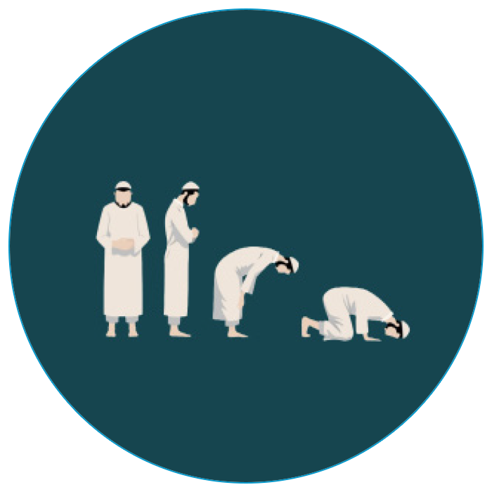
٢- خۆت پاك بكهوه
ئهگهر ویستت نوێژ بكهیت:
١- دهستنوێژ بگره.
(كاتێك دهستنوێژت نهبوو).
٢- خۆت بشۆ.
(ئهگهر لهشگرانبوویت).
بهڵام
ئهگهر ئاوت دهست نهكهوت ، یان بهكارهێنانی زیانت پێبگهیهنێت تهیهمموم بكه.
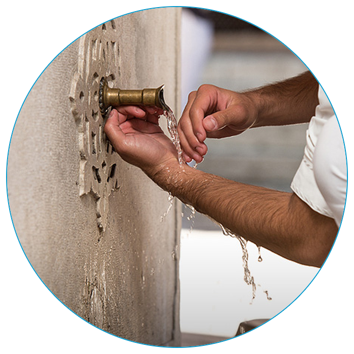
بەڵگە
لهبهر فهرمایشتی خوای گهوره له ئایهتی (6)ـی سورهتی (المائدة).
٣- با جێگای نوێژهكهت پاك بێت
جل و وبەرگ و جێگای نوێژەکەت پاکبکەرەوە.
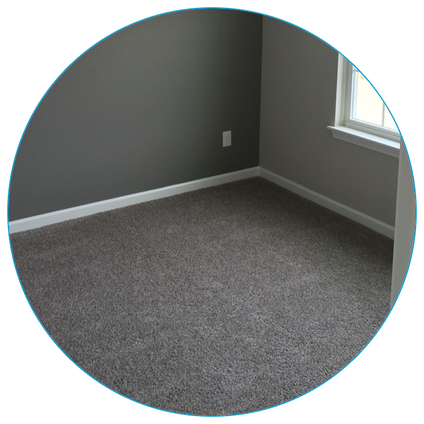
بەڵگە
لهبهر فهرمایشتی خوای پهروهردگار: (وَثِيَابَكَ فَطَهِّرْ - پۆشاکهكهت خاوێن ڕابگره) [سورة المدثر]
وه لهبهر فهرمایشتی پێغهمبهر ﷺ :(أريقوا عليه سجلا من الماء -كاتێك دهشتهكییهك له مزگەوت میزی كرد- پێغهمبهر ﷺ فهرمووی:سهتڵێك ئاوی پێدا بڕێژن ) [الدارقطني: 453 ، صححه الالباني الإرواء:280]
٤- ڕوو بكهره قیبله
ڕوو بكهره قیبله ئهو شوێنهی كه موسوڵمانان له كاتی نوێژدا ڕووی تێدهكهن كه بریتییه له كهعبهی پیرۆز بهبێ ڕوو وهرگێڕان.
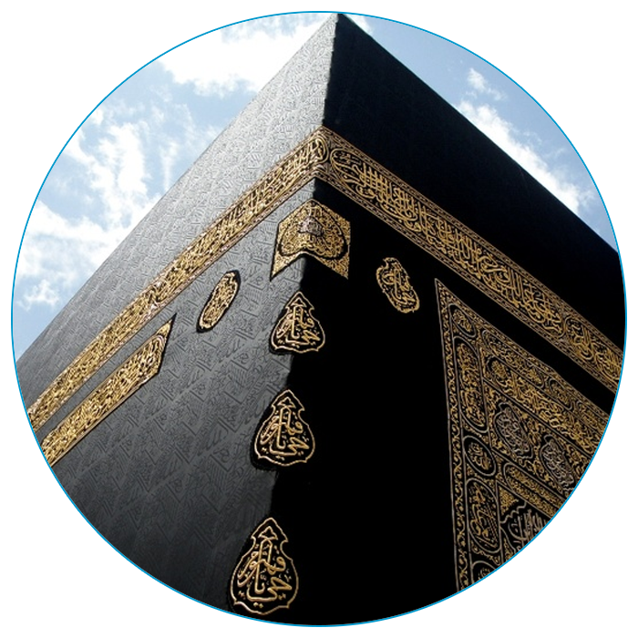
بەڵگە
لهبهر فهرمایشتی خوای پهروهردگار: (فَوَلِّ وَجْهَكَ شَطْرَ الْمَسْجِدِ الْحَرَامَِ - ڕوو بكهره كهعبهی پیرۆز) ،
وه لهبهر فهرمایشتی پێغەمبەر ﷺ: (إذا قمت إلی الصلاة فأسبغ الوضوء ، ثم استقبل القبلة - كاتێك ویستت نوێژبكهیت بهجوانی دهستنوێژ بگره ، پاشان ڕوو بكهره قیبله) (البخاري 6251 مسلم 397).
٥- نیهتی نوێژ بهێنه
له دڵی خۆت دا نیهتی ئهو نوێژه بهێنه كه دهتهوێت بیكهیت.
بهزمان نیهت مههێنه.
چونكه جێگای نیهت دڵه نهك زمان.
بەڵگە
لهبهر فهرمایشتی پێغەمبەر ﷺ: (إنما الأعمال بالنیات - ههموو كردهوهكان به نیهتهوه ئهنجام دهدرێن)[البخاری ، مسلم]، وه نابێت نیهت به زمان بهێنیت، تهنها بهدڵ بیرت لای ئهوه بێت كه نوێژ دهكهیت.
٦- تهكبیر بكه
تهكبیرهی نوێژ دابهستن بكه و بڵێ:
(اللهُ أَكْبَرُ)
بەڵگە
لهبهر فهرمایشتی پێغەمبەر ﷺ: (إذا قمت إلی الصلاة فكبر - كاتێك ویستت دهست به نوێژ بكهیت: «الله أکبر» بكه) [البخاري(793) مسلم(397)] (تحريمها التكبير وتحليلها التسليم - به تهكبیرهی نوێژ دابهستن ئهو كردهوانهی كه له دهرهوی نوێژدا ڕێگهپێدراون قهدهغه دهكرێن ، وه به سهلام دانهوه ئاسایی دهبنهوه) [صحيح سنن ابن ماجه (224)].
٧- دهستهكانت بهرز بكهرهوه
لهگهڵ (اللهُ أَكْبَرُ) دهستهكانت بهرز بكهوه به هاوتای شانت یان گوێچكهت.
وه بڕوانه شوێنی سوجدهكهت،
وه پێیهكانت به فراوانی ههردوو شانت بكهرهوه.
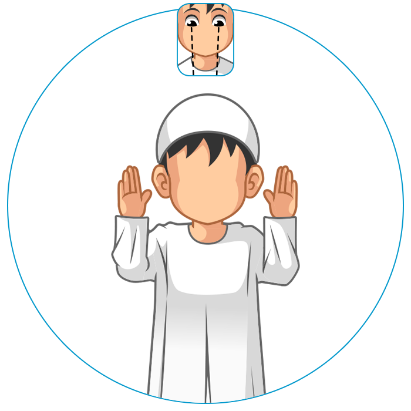
بەڵگە
لهبهر كردهی پێغهمبهر ﷺ :(أَنَّ رَسُولَ اللهِ صَلَّى اللهُ عَلَيْهِ وَسَلَّمَ كَانَ يَرْفَعُ يَدَيْهِ حَذْوَ مَنْكِبَيْهِ إِذَا افْتَتَحَ الصَّلَاةَ)(البخاري738)
(فَرَفَعَ يَدَيْهِ حَتَّى حَاذَتَا بِأُذُنَيْهِ)[مسلم 401 ، أبو داود 957]
٨- دهستی ڕاست لهسهر دهستی چهپ دابنێ
دهستت لهسهر سنگت دابنێ:
دهستی ڕاستت لهسهر دهستی چهپت دابنێ.
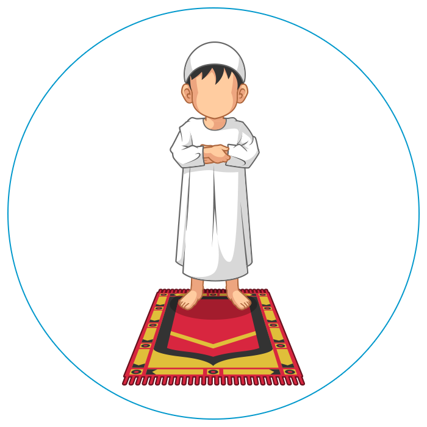
بەڵگە
(وَضَعَ يَدَهُ الْيُمْنَى عَلَى الْيُسْرَى – چونكه پێغهمبهر ﷺ له ناو نوێژ دهستی ڕاستی لهسهر دهستی چهپی دادهنا)[مسلم 401]
٩- نزای دهسپێك بخوێنه
بڵێ: سُبْحَانَكَ اللَّهُمَّ وَبِحَمْدِكَ وَتَبَارَكَ اسْمُكَ وَتَعَالَى جَدُّكَ وَلاَ إِلَهَ غَيْرُكَ
یاخود بڵێ
اللهُمَّ بَاعِدْ بَيْنِي وَبَيْنَ خَطَايَايَ كَمَا بَاعَدْتَ بَيْنَ المَشْرِقِ وَالمَغْرِبِ، اللهُمَّ نَقِّنِي مِنَ الخَطَايَا كَمَا يُنَقَّى الثَّوْبُ الأَبْيَضُ مِنَ الدَّنَسِ ، اللهُمَّ اغْسِل خَطَايَايَ بِالمَاءِ وَالثَّلجِ

بەڵگە
[البخاري (744) مسلم (598)]
[سنن الترمذي (242)سنن النسائي (899 ، 900)سنن ابن ماجه (804) صححه الالباني. صحيح أبي داود (749)]
سوننهته له دوای تهكبیرهی ئیحرام و پێش خوێندنی سورهتی (الفاتحة) یهكێك م نزایانه بخوێنرێت.
١٠- سورهتی (الفاتحة) بخوێنه
بڵێ :
أَعُوذُ بِاللهِ مِنَ الشَّيْطَانِ الرَّجِيمِ
بِسْمِ اللَّـهِ الرَّحْمَـٰنِ الرَّحِيمِ ﴿١﴾ الْحَمْدُ لِلَّـهِ رَبِّ الْعَالَمِينَ ﴿٢﴾ الرَّحْمَـٰنِ الرَّحِيمِ ﴿٣﴾ مَالِكِ يَوْمِ الدِّينِ ﴿٤﴾ إِيَّاكَ نَعْبُدُ وَإِيَّاكَ نَسْتَعِينُ ﴿٥﴾ اهْدِنَا الصِّرَاطَ الْمُسْتَقِيمَ ﴿٦﴾ صِرَاطَ الَّذِينَ أَنْعَمْتَ عَلَيْهِمْ غَيْرِ الْمَغْضُوبِ عَلَيْهِمْ وَلَا الضَّالِّينَ ﴿٧﴾
پاشان سورهتێكی تر بخوێنه وهك:
بِسْمِ اللَّـهِ الرَّحْمَـٰنِ الرَّحِيمِ
قُلْ هُوَ اللَّـهُ أَحَدٌ ﴿١﴾ اللَّـهُ الصَّمَدُ ﴿٢﴾ لَمْ يَلِدْ وَلَمْ يُولَدْ ﴿٣﴾ وَلَمْ يَكُن لَّهُ كُفُوًا أَحَدٌ ﴿٤﴾
بەڵگە
خوای گهوره دهفهرموێت:
( فَإِذَا قَرَأْتَ الْقُرْآنَ فَاسْتَعِذْ بِاللهِ مِنَ الشَّيْطَانِ الرَّجِيمِ - کاتێك قورئانت خوێند پهنا بگره به خوا له شهیتانی نهفرین لێکراو وبڵێ: (أعوذ باللهِ من الشيطان الرجيم). )[سورة النحل 98]
وه لهبهر فهرمایشتی پێغهمبهر ﷺ :(لَا صَلَاةَ لِمَنْ لَمْ يَقْرَأْ بِفَاتِحَةِ الْكِتَابِ - نوێژی ئهو كهسه دروست نییه كه سورهتی (الفاتحة)ـی تێدا نهخوێنێت) [البخاري 765 مسلم 394] ، وه (ثُمَّ اقْرَأْ مَا تَيَسَّرَ مَعَكَ مِنَ الْقُرْآنِ -هێندهی بۆت گونجا له قورئان بیخوێنه) [البخاري 722 مسلم 392]
١١- ڕكوع ببه
بڵێ: (اللهُ أَكْبَرُ) وه لهگهڵ -اللهُ أَكْبَرُ-دا ههردوو دهستهكانت بهرزبكهرهوه ، وه پهنجهكانت به ڕاستی بگره و بڵاویان مهكهرهوه.
پاشان بچۆره ڕكوع، پشتت بچهمێنهرهوه ، وه سهرت له ئاستی پشتت ڕابگره
وه دهستهكانت لهسهر ئهژنۆت دابنێ ههر وهك ئهوهی ئهژنۆكانت بگریت.
وه پهنجهكانت بڵاوبكهرهوه
وه (3 جار) بڵێ: «سُبْحَانَ رَبِّي الْعَظِيم» .
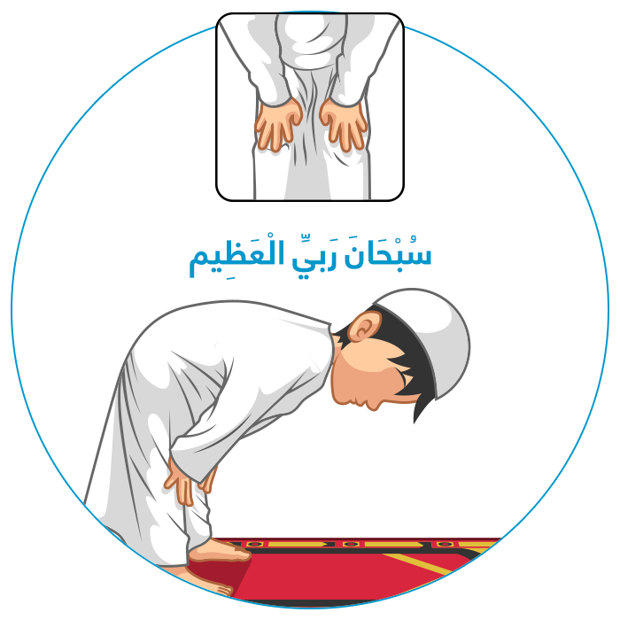
بەڵگە
لهبهر كردهی پێغهمبهر ﷺ :(وَإِذَا رَكَعَ أَمْكَنَ يَدَيْهِ مِنْ رُكْبَتَيْهِ، ثُمَّ هَصَرَ ظَهْرَهُ - كاتێك پێغەمبەر ﷺ بچوایهته ڕکوع بهباشی دەستهكانی لهسەر ئهژنۆی دادهنا ، وه پشتی دهچهماندهوه )[البخاري 828]
(وَكَانَ إِذَا رَكَعَ لَمْ يُشْخِصْ رَأْسَهُ، وَلَمْ يُصَوِّبْهُ، وَلَكِنْ بَيْنَ ذَلِكَ - كاتێك پێغەمبەر ﷺ چووبایهته ڕكوع سهری بهرز نهدهكردهوه و نزمیشی نهدهكردهوه بەڵكو له نێوانیاندا ڕایدهگرت)[مسلم 498]
(فوضع يديه على ركبتيه كأنه قابض عليهما - دهستهكانی لهسهر ئهژنۆی دادهنا ، ههر وهكو ئهوهی بیانگرێت.)[صححه الألباني: جامع الترمذي 260] (يَقُولُ إِذَا رَكَعَ « سُبْحَانَ رَبِّيَ الْعَظِيمِ » ثَلَاثَ مَرَّاتٍ) [ابن ماجه 888 «صحيح ابن ماجه 725»]
١٢- ههستهوه له ڕكوع
كاتێك ههستایتهوه له ڕكوع بڵێ: (سَمِعَ اللهُ لِمِنْ حَمِدَهُ)
وه جارێكی تر دهستهكانت بهرز بكهرهوه به هاوتای شانت یان گوێچكهت.
پاشان پشتت ڕاست بكهرهوە
وه بڵێ: (رَبنَا وَلَك الْحَمد).
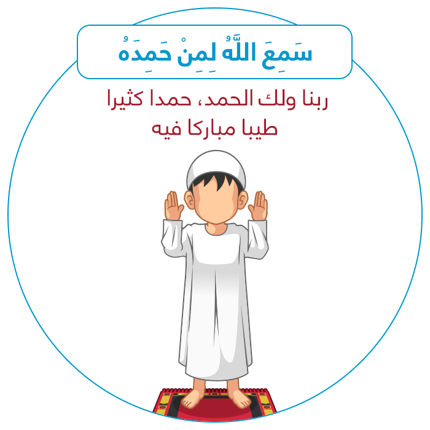
بەڵگە
(وَإِذَا رَفَعَ رَأْسَهُ مِنَ الرُّكُوعِ رَفَعَهُمَا كَذَلِكَ أَيْضًا - كاتێك پێغەمبەر ﷺ سهری بهرز دهكردهوه له ڕكوع دهستهكانیشی بهرزدهكردهوه)[البخاري 735]
(فَإِذَا رَفَعَ رَأْسَهُ اسْتَوَى حَتَّى يَعُودَ كُلُّ فَقَارٍ مَكَانَه - كاتێك پێغەمبەر ﷺ سهری بهرز دهكردهوه -له ڕكوع- پشتی ڕاست دهكردهوه هەتاوهكو بڕبڕهكانی پشتی دهگهڕانهوه جێگای خۆیان ) [البخاري 828]
(حِينَ يَرْفَعُ رَأْسَهُ يَقُولُ : « سَمِعَ اللَّهُ لِمَنْ حَمِدَهُ، رَبَّنَا وَلَكَ الْحَمْدُ » )[البخاري 804]
١٣- سوجده ببه
بڵێ: (اللهُ أَكْبَرُ) و سهرت لهسهر ڕووی زهوی دابنێ.
•
دهبێت (حهوت) ئهندامی لاشهت لهسهر زهوی دابنێیت.
•
(ناوچاوان و لوت پێكهوه – ههردوو دهست – ههردوو ئهژنۆ – ههردوو پێ)
•
پهنجهكانی دهستت بڵاو مهكهرهوه و ڕوویان بكهره قیبله.
•
دهستهكانت له ئاستی شانت دابنێ یان له ئاستی گوێچكهكانت.
•
ئانیشكت لهسهر زهوی دامهنێ.
•
ههردوو پێیهكانت بهیهكهوه بلكێنه ، وه پهنجهكانی پێت ڕوو بكهره قیبله.
•
(٣ جار) بڵێ: (سُبْحَانَ رَبِّي الْأَعْلَى).
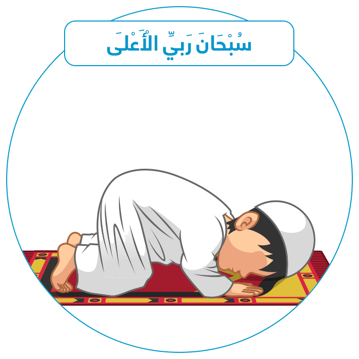
بەڵگە
لهبهر كرده و فهرمایشتی خۆشهویستمان ﷺ:
(فَإِذَا سَجَدَ وَضَعَ يَدَيْهِ غَيْرَ مُفْتَرِشٍ، وَلَا قَابِضِهِمَا وَاسْتَقْبَلَ بِأَطْرَافِ أَصَابِعِ رِجْلَيْهِ الْقِبْلَةَ - كاتێك پێغەمبەر ﷺ سوجدهی ببردایه، دهستی خۆی له سهر زهوی دادهنا وه پهنجهكانی بڵاو نهدهكردهوه و دهستیشی دانهدهخست ، وه سەری پهنجهكانی پێ ی ڕوو دهكرده قیبله) [البخاري 828]
(وَيَنْهَى أَنْ يَفْتَرِشَ الرَّجُلُ ذِرَاعَيْهِ افْتِرَاشَ السَّبُعِ - پێغەمبەر ﷺ ڕێگری دهکرد كه نوێژخوێن دهستهكانی ڕابخات وەک ڕاخستنی دڕنده)[مسلم 498]
(أُمِرْتُ أَنْ أَسْجُدَ عَلَى سَبْعَةِ أَعْظُمٍ : عَلَى الْجَبْهَةِ - وَأَشَارَ بِيَدِهِ عَلَى أَنْفِهِ - وَالْيَدَيْنِ، وَالرُّكْبَتَيْنِ، وَأَطْرَافِ الْقَدَمَيْنِ، وَلَا نَكْفِتَ الثِّيَابَ وَالشَّعَرَ – فهرمانم پێكراوه كه لهسهر حهوت ئهندام سوجده ببهم ...). [البخاري 812 مسلم 490]
(وَإِذَا سَجَدَ قَالَ : « سُبْحَانَ رَبِّيَ الْأَعْلَى «، ثَلَاثَ مَرَّاتٍ) [ابن ماجه 888 «صحيح ابن ماجه 725»]
١٤- نێوان ههردوو سوجده
بڵێ: (اللهُ أَكْبَرُ)، وه ههستهوه له سوجده.
پێی چهپت ڕابخه و لهسهری دابنیشه ،
وه پێی ڕاستت بچهقێنهره زهوی،وه پهنجهكانی ڕوو بكهره قیبله.
وه بڵێ: (رَبِّ اغْفِرْ لِي رَبِّ اغْفِرْ لِي).
جارێكی تر بڵێ: (اللهُ أَكْبَرُ) و سوجدهی (دووهم) ببە.
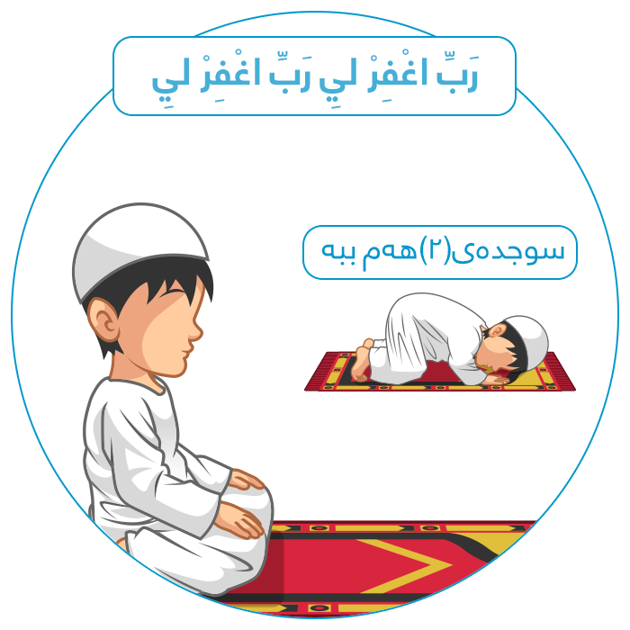
بەڵگە
(أن النبي صلى اللَّهُ عليه وسلم كان يقول بين السجدتين: ( رَبِّ اغْفِرْ لِي رَبِّ اغْفِرْ لِي ) – پێغهمبهر ﷺ له نێوان ههردوو سوجدهكهدا دهیفهرموو:( رَبِّ اغْفِرْ لِي رَبِّ اغْفِرْ لِي) ) [( صحيح ) الارواء 335 ابن ماجه 888] .
١٥- ڕكاتی (دووهم) بكه
بڵێ : (اللهُ أَكْبَرُ) وه ههستهوه وه ڕكاتی (دووهم) بكه ههر وهك ڕكاتی (یهكهم).
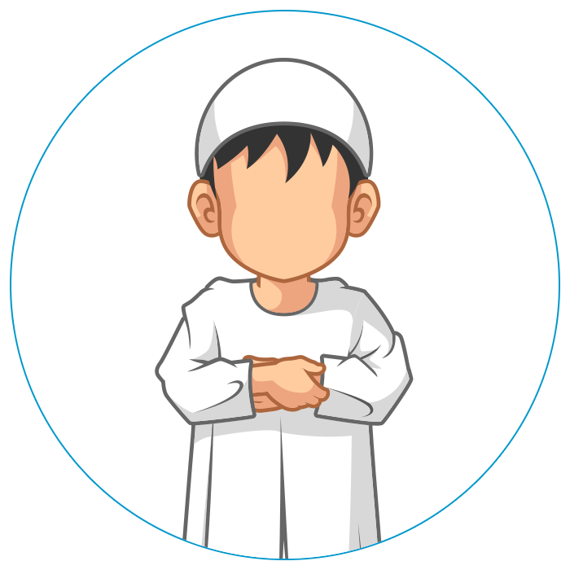
بەڵگە
(ثُمَّ يَفْعَلُ ذَلِكَ فِي الصَّلَاةِ كُلِّهَا حَتَّى يَقْضِيَهَا - پاشان پێغەمبەر ﷺ ههمان كاری ئهنجام دهدایهوه ههتاوهكو نوێژهكهی كۆتایی پێدههێنا). [البخاري 789]
١٦- تهحیات بخوێنه
له دوای ئهوهی سوجدهی (دووهم) دهبەیت له ڕكاتی (دووهم) دابنیشه لهسهر پێی چهپت به ڕاخراوی،وه پێی ڕاستت بچهقێنهره زهوی بهههمان شێوازی دانیشتنی نێوان دوو سوجدهكه.
تهحیات بخوێنه و بڵێ:
(التَّحِيَّاتُ للهِ وَالصَّلَوَاتُ وَالطَّيِّبَاتُ، السَّلَامُ عَلَيْكَ أَيُّهَا النَّبِيُّ وَرَحْمَةُ اللهِِ وَبَرَكَاتُهُ، السَّلَامُ عَلَيْنَا وَعَلَى عِبَادِ اللهِ الصَّالِحِينَ ؛ أَشْهَدُ أَنْ لَا إِلَهَ إِلَّا اللهُ، وَأَشْهَدُ أَنَّ مُحَمَّدًا عَبْدُهُ وَرَسُولُهُ ) [البخاري 831]
(اللَّهُمَّ صَلِّ عَلَى مُحَمَّدٍ وَعَلَى آلِ مُحَمَّدٍ، كَمَا صَلَّيْتَ عَلَى إِبْرَاهِيمَ وَعَلَى آلِ إِبْرَاهِيمَ، إِنَّكَ حَمِيدٌ مَجِيدٌ، اللَّهُمَّ بَارِكْ عَلَى مُحَمَّدٍ وَعَلَى آلِ مُحَمَّدٍ، كَمَا بَارَكْتَ عَلَى إِبْرَاهِيمَ وَعَلَى آلِ إِبْرَاهِيمَ، إِنَّكَ حَمِيدٌ مَجِيدٌ)[البخاري 3370]
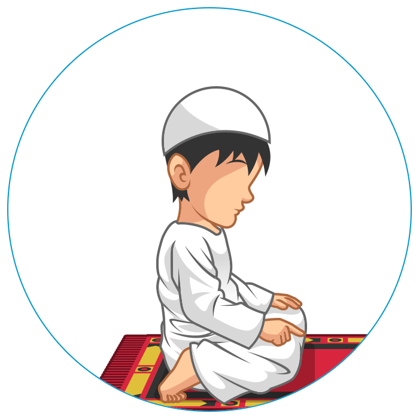
بەڵگە
١٧- ڕكاتی (3 و 4) بكه
لهدوای ئهوهی كه تهحیاتی یهكهم دهخوێنیت ههستهوه و بڵێ:(اللهُ أَكْبَرُ).
وه دهستهكانت بهرزبكهرهوه و ڕكاتی (3 و4) بكه وهكو ڕكاتهكانی تر.
وه دهشتوانیت له ڕكاتی (3 و4)
جار جار لهدوای سورهتی (الفاتحة) سورهتێكی تر بخوێنیت .
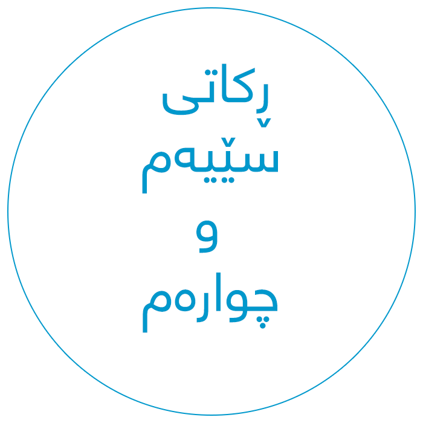
بەڵگە
(ثُمَّ يَفْعَلُ ذَلِكَ فِي الصَّلَاةِ كُلِّهَا حَتَّى يَقْضِيَهَا - پاشان پێغهمبهر ﷺ ههمان كاری دهكرد ههتاوهكو نوێژهكهی كۆتایی پێدههێنا). [البخاري 789]
١٨- تهحیاتی كۆتایی بخوێنه
دوای ئهوهی سوجدهی (دووهم) دهبەیت له ڕكاتی (چوارهم) دابنیشه بهشێوازی تهوهڕوك ههروهك چۆن ئاماژهی پێدهكهین.
وه تهحیات بخوێنه ،
وه ئهم نزایهشی بۆ زیادبكه:
(اللَّهُمَّ إِنِّي أَعُوذُ بِكَ مِنْ عَذَابِ الْقَبْرِ وَمِنْ عَذَابِ النَّارِ وَمِنْ فِتْنَةِ الْمَحْيَا وَالْمَمَاتِ وَمِنْ فِتْنَةِ الْمَسِيحِ الدَّجَّالِ).
دوای ههموو تهحیاتێكی كۆتایی ئهم نزایه له بیرمهكه چونكه: واجبه بیخوێنیت.
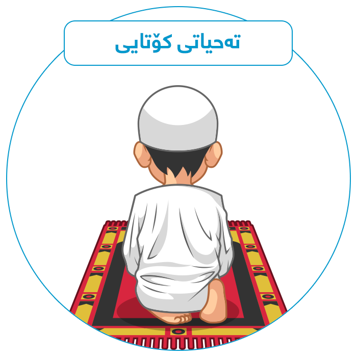
بەڵگە
لهبهر فهرمایشتی پێغەمبەر ﷺ: (إِذَا تَشَهَّدَ أَحَدُكُمْ، فَلْيَسْتَعِذْ بِاللَّهِ مِنْ أَرْبَعٍ يَقُولُ : اللَّهُمَّ إِنِّي أَعُوذُ بِكَ مِنْ عَذَابِ جَهَنَّمَ، وَمِنْ عَذَابِ الْقَبْرِ، وَمِنْ فِتْنَةِ الْمَحْيَا وَالْمَمَاتِ، وَمِنْ شَرِّ فِتْنَةِ الْمَسِيحِ الدَّجَّالِ)[البخاري 1377 مسلم 588]
١٩- به شێوازی تهوهڕوك دابنیشه
ئهو نوێژهی دوو تهحیاتی تێدایه،وهك: (نیوهڕۆ - عهسر - ئێواره - خهوتنان)
دهتوانیت شێوهدانیشتنی (تهوهڕوك) له تهحیاتی كۆتایی دا بهكاربهێنیت.
شێوازهكهی: پێی ڕاستت دهچهقێنیت، وه پێی چهپت دهخهیته ژێر پێ ی ڕاستت .
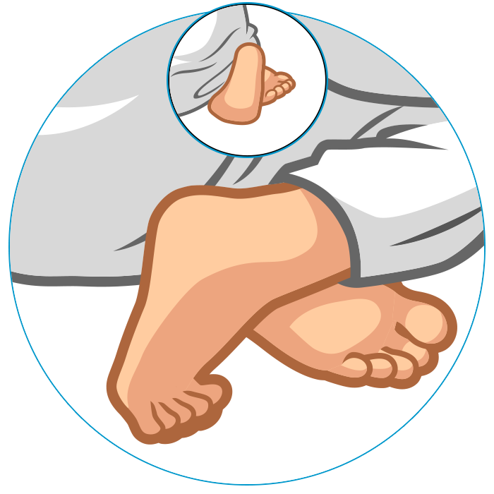
بەڵگە
لهبهر كردهی پێغهمبهر ﷺ:(وَإِذَا جَلَسَ فِي الرَّكْعَةِ الْآخِرَةِ قَدَّمَ رِجْلَهُ الْيُسْرَى وَنَصَبَ الْأُخْرَى وَقَعَدَ عَلَى مَقْعَدَتِهِ ) [البخاري 828].
(حَتَّى إِذَا كَانَتِ السَّجْدَةُ الَّتِي فِيهَا التَّسْلِيمُ أَخَّرَ رِجْلَهُ الْيُسْرَى وَقَعَدَ مُتَوَرِّكًا عَلَى شِقِّهِ الْأَيْسَرِ. قَالُوا : صَدَقْتَ، هَكَذَا كَانَ يُصَلِّي صَلَّى اللَّهُ عَلَيْهِ وَسَلَّمَ.) [صحيح سنن أبي داود 730]
٢٠- چۆنیهتی دانیشتنت له تهحیات
لهو كاتهی كه تهحیات دهخوێنیت:
دهستی ڕاستت لهسهر ڕانی ڕاستت دابنێ ،
وه دەستی چهپت لهسهر ڕانی چهپت دابنێ.
وه پهنجهكانی دهستی چهپت تهخت بكه،وه پهنجهكانی دەستی ڕاستت بنوشتێنهرهوه جگه له پهنجهی شایهتومان.
كاتێك كه تهحیات دهخوێنیت سهیری پهنجهی شایهتومانت بكه و پهنجهی شایهتومان بهرزبکەرهوه.
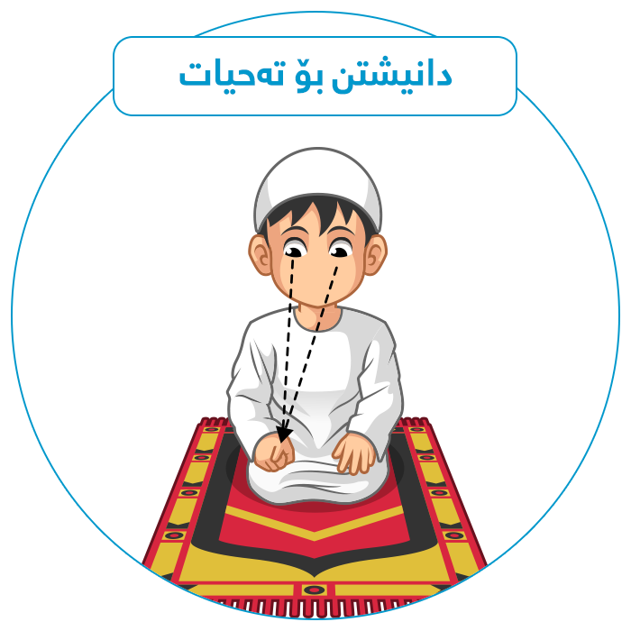
بەڵگە
(أَنَّ النَّبِيَّ صَلَّى اللَّهُ عَلَيْهِ وَسَلَّمَ كَانَ إِذَا جَلَسَ فِي الصَّلَاةِ، وَضَعَ يَدَيْهِ عَلَى رُكْبَتَيْهِ، وَرَفَعَ إِصْبَعَهُ الْيُمْنَى الَّتِي تَلِي الْإِبْهَامَ، فَدَعَا بِهَا، وَيَدَهُ الْيُسْرَى عَلَى رُكْبَتِهِ الْيُسْرَى بَاسِطَهَا عَلَيْهَا)[مسلم 580].
(فَوَضَعَ يَدَهُ الْيُمْنَى عَلَى فَخِذِهِ الْيُمْنَى، وَأَشَارَ بِأُصْبُعِهِ الَّتِي تَلِي الْإِبْهَامَ فِي الْقِبْلَةِ، وَرَمَى بِبَصَرِهِ إِلَيْهَا أَوْ نَحْوِهَا، ثُمَّ قَالَ : هَكَذَا رَأَيْتُ رَسُولَ اللَّهِ صَلَّى اللَّهُ عَلَيْهِ وَسَلَّمَ يَصْنَعُ.) [قال الألباني: «حسن صحيح» في صحيح سنن النسائي 1160]
٢١- سهلام بدهوه
له دوای ئهوهی كه تهحیاتی كۆتاییت خوێند، سهلام بدهرهوه.
سهرهتا بهلای ڕاستدا سهلام بدهرهوه و بڵێ (السَّلَامُ عَلَيْكُمْ وَرَحْمَةُ اللهِ)
پاشان بهلای چهپدا سهلام بدهرهوه و بڵێ
(السَّلَامُ عَلَيْكُمْ وَرَحْمَةُ اللهِ).
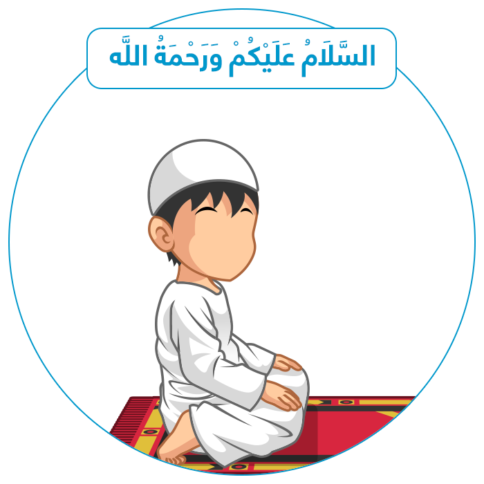
بەڵگە
(وَكَانَ يَخْتِمُ الصَّلَاةَ بِالتَّسْلِيمِ - پێغەمبەر ﷺ به سهلام دانهوه كۆتایی به نوێژ دههێنا) [مسلم 498]
(كُنَّا إِذَا صَلَّيْنَا مَعَ رَسُولِ الله صَلَّى الله عَلَيْهِ وَسَلَّمَ، قُلْنَا : السَّلَامُ عَلَيْكُمْ وَرَحْمَةُ الله، السَّلَامُ عَلَيْكُمْ وَرَحْمَةُ الله)[مسلم 431]
(كُنْتُ أَرَى رَسُولَ الله صَلَّى الله عَلَيْهِ وَسَلَّمَ يُسَلِّمُ عَنْ يَمِينِهِ وَعَنْ يَسَارِهِ، حَتَّى أَرَى بَيَاضَ خَدِّهِ)
[مسلم 582]